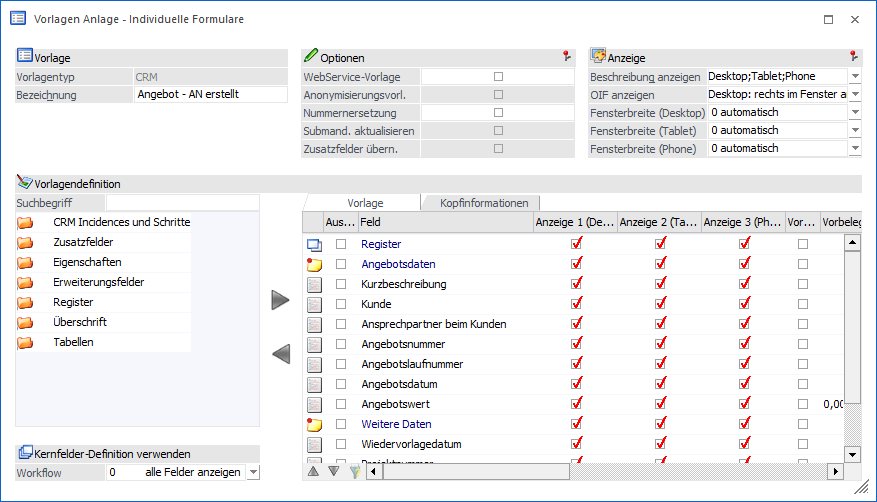
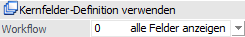
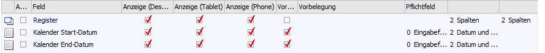
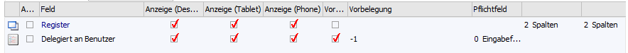
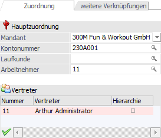
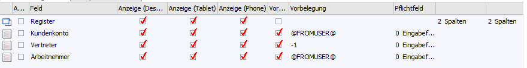
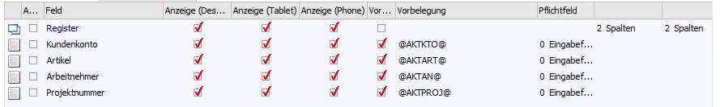
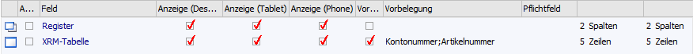
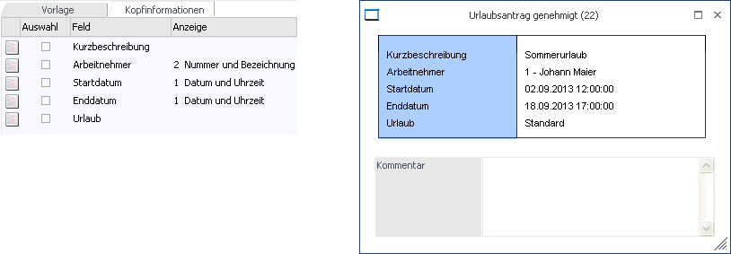

Grundsätzlich unterscheidet sich die Anlage von Vorlagen des Typs "CRM" nicht von der Anlage anderer Typen. Aus diesem Grund werden in diesem Kapitel nur die Spezial- bzw. Sonderfunktionen beschrieben.

Kernfelder-Definition verwenden

Ø Workflow
Durch Auswahl eines Workflows werden in der Tabelle "Datenfelder" nur noch jene Felder angezeigt, welche im Workflow-Wizard als "Kernfelder" deklariert wurden (dabei werden ggfs. auch die Bezeichnungen der Felder verwendet, welche in der Kernfelder-Definition im Workflow-Wizard definiert worden sind). In der Auswahlliste der Combobox stehen dafür jene Workflows zur Verfügung, in denen auch die selektierte Vorlage genutzt wird.
Sind in der Vorlage Variablen enthalten, welche nicht der Kernfelder-Definition entsprechen, so werden diese Zeilen in der Tabelle "Datenfelder der Vorlage" farbig hervorgehoben.
Hinweis
Diese Combobox steht für alle Vorlagenarten (Individuelle Formulare, Export-/Import-Vorlagen, sowie den Suchstrategien) in der Kategorie der Bewegungsdaten für "CRM" zur Verfügung.
Tabelle "Datenfelder der Vorlage" - Allgemein
Folgende Besonderheiten sind grundsätzlich bei CRM-Vorlagen zu beachten:
Ø Feldübernahme
Wenn bei einem Workflow ein weiterführender Schritt geschrieben wird, so werden die folgenden Feldinhalten automatisch vom Vorschritt übernommen:
ü Startdatum
ü Enddatum
ü Kundenkonto
ü Kontakt Kunde
ü Händlerkonto
ü Mitarbeiter
ü Vertreter
ü Artikel
ü Kostenstelle
ü Kostenträger
ü Kurzbeschreibung
ü Kontakt Händler
ü Projektnummer
ü OP-Nummer
ü Kostenart
ü Anlagenbuchnummer
ü PPS-Auftrag
Ø Zusatzfelder / Eigenschaft
Die Speicherung von Zusatzfeldern und Eigenschaften findet pro CRM-Fall und nicht pro Schritt statt.
Tabelle "Datenfelder der Vorlage" - individuelles Formular
Folgende Besonderheiten sind bei individuellen Formularen zu beachten:
Ø Überschrift
Bei der Darstellung des Formulars wird geprüft, ob in der Vorlage Überschriften vorhanden sind. Ist dies nicht der Fall, wird automatisch am Beginn eines jedes Registers eine Überschrift eingefügt. Als Text wird die Bezeichnung der Vorlage verwendet.
Sollte sich in der CRM-Vorlage bereits eine Überschrift befinden, dann erfolgt die Darstellung auf gewohnte Art und Weise.
Ø Datumsfelder
In Vorlagen, welche für das CRM verwendet werden, handelt es sich bei den Datumsfeldern um Felder mit dem "internen" Typ "Datumsfelder mit Uhrzeit". D.h. werden diese Felder in individuellen Formularen verwendet, so kann dort zusätzlich zum Datum auch die Uhrzeit angegeben werden. Wird in so einem Feld die Uhrzeit als erstes eingegeben, dann wird als Datum das Tagesdatum eingefügt.
Hinweis
Sind in den CRM-Vorlagen die Felder "Startdatum" und "Enddatum" bzw. "Kalender Start-Datum" und "Kalender End-Datum" vorhanden, so wird bei deren Eingabe geprüft, dass das Startdatum (Kalender Start-Datum) immer VOR dem Enddatum (Kalender End-Datum) liegt.
Ø Vorbelegung
Für CRM-Vorlagen stehen folgende Spezialvorbelegungen zur Verfügung:
ü Datumsfelder
Für Datumsfelder
mit dem "internen" Typ "Datumsfeld mit Uhrzeit" (betrifft Datumsfelder des CRM)
kann als Vorbelegung nur das Datum verwendet werden! Wenn in der Vorlage das
aktuelle Tagesdatum angezeigt werden soll, dann muss nur die Checkbox
"Vorbelegen" aktiviert werden (Feld "Vorbelegung" bleibt leer).
Beispiel

ü Feld "Delegiert an
Benutzer"
Wenn in das Feld "Delegiert an Benutzer" der aktuelle Benutzer
vorbelegt werden soll, dann ist dieses über die Vorbelegung "-1" möglich.
Beispiel

ü Daten der Benutzeranlage
Wenn
die Daten aus der Benutzeranlage des aktuellen Benutzers herangezogen werden,
dann ist dieses durch die Vorbelegung "@FROMUSER@" (bei Feldern mit Kontonummer
bzw. Arbeitnehmer) oder "-1" (Vertreter) möglich.
Hinweis
Sollte nichts in der Benutzeranlage hinterlegt sein, dann bleiben die Felder in der CRM-Vorlage leer.
Beispiel - Benutzeranlage und Vorlage


ü Daten der aktuellen
Bearbeitung
Wenn die Vorbelegung aufgrund der aktuellen Bearbeitung eines
Datensatzes geschehen soll (z.B. für Konto "x" wird ein Beleg erfasst - also
soll das Konto direkt in der CRM-Vorlage vorbelegt werden), dann ist dieses mit
den folgenden Vorbelegungen möglich:
ü @AKTKTO@ -> Aktuelles Konto
ü @AKTART@ -> Aktueller Artikel
ü @AKTAN@ -> Aktueller Arbeitnehmer
ü @AKTPROJ@ -> Aktuelles Projekt
Hinweis
Sollte aktuell noch kein Datensatz bearbeiten worden sein, dann bleiben die Felder in der CRM-Vorlage leer.
Beispiel

ü XRM Tabelle
Über eine
XRM-Tabelle kann ein CRM-Fall mit weiteren Zuordnungen versehen werden (z.B. der
CRM-Fall betrifft nicht nur Kunde "a", sondern auch "b", "c" und "d"). Was für
Objekte dabei zur Verfügung stehen sollen, kann über eine Mehrfachauswahl
definiert werden.
Beispiel

Tabelle "Datenfelder der Vorlage" - Export-/Import-Vorlage
Folgende Besonderheiten sind bei Export-/Import-Vorlagen zu beachten:
Ø Workflow-Nummer / Zeilennummer
In Export/Import-Vorlagen müssen die Felder "Workflow-Nummer" und "Zeilennummer" vorhanden sein (auch wenn diese nicht als "Pflichtfelder" gekennzeichnet sind); in individuellen Formularen dürfen diese wiederum nicht verwendet werden.
Diese Felder werden beim Umschalten des Vorlagentyps eingefügt bzw. entfernt und beim Speichern der Vorlage nochmals geprüft, ob sie vorhanden sind.
Unterregister "Kopfinformation"
Das Unterregister "Kopfinformationen" steht nur bei individuellen Formularen des Typs "CRM" zur Verfügung. Über dieses ist es möglich für die CRM-Vorlage einen Kopfbereich zu definieren, in welchem Informationen über den CRM-Fall erscheinen. Hierfür steht in der Tabelle folgende zusätzliche Spalte zur Verfügung:
Ø Anzeige
Über diese Spalte wird definiert wie der Inhalt des Felds dargestellt werden soll. Die Einstellungsmöglichkeiten sind dabei abhängig vom Datenfeld.
Beispiel
